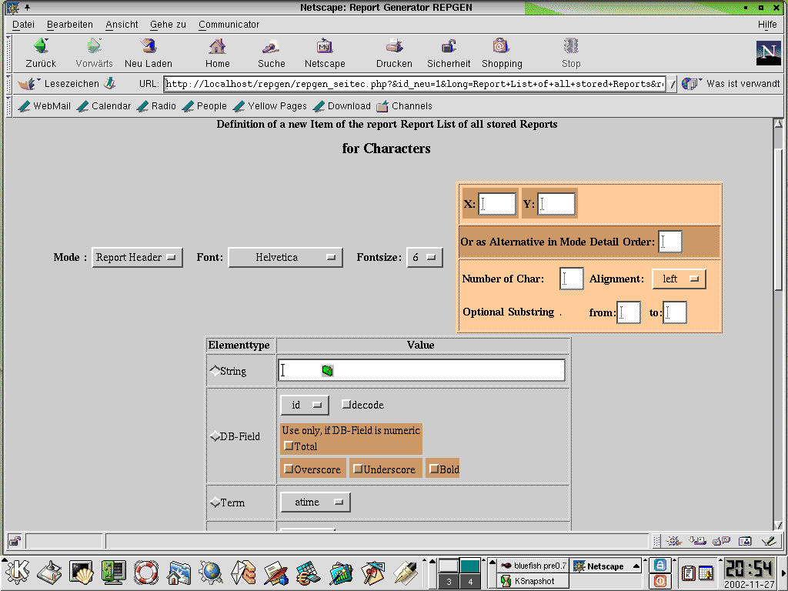

1. General
2. Databases
3. Elements
3.1 Report Definition 3.2 Function Defintion 3.3 Block Definition 3.4 Items 3.4.1 String 3.4.2 Database Field 3.4.3 Block 3.4.4 Term 3.4.5 Textarea 3.4.6 Line 3.4.7 Rectangle
3.2 Function Defintion
3.3 Block Definition
3.4 Items
3.4.1 String 3.4.2 Database Field 3.4.3 Block 3.4.4 Term 3.4.5 Textarea 3.4.6 Line 3.4.7 Rectangle
3.4.2 Database Field
3.4.3 Block
3.4.4 Term
3.4.5 Textarea
3.4.6 Line
3.4.7 Rectangle
4.1 Tables 4.2 Structure of an Attribut of an Item
4.2 Structure of an Attribut of an Item
6. Sample
7. Functions
Repgen creates automatic an PDF-Report from a declaration, which is stored in an SQL Table. To generate a PDF-report you need only one call of a PHP-function.
You can create reports printing the result set of one select statement:
- A part to define a report with an HTML-Interface and to store this definition in a SQL-table called 'reports'. - A second part, to create an PDF-File out of the stored definition.
- A second part, to create an PDF-File out of the stored definition.
The report definition ist based on the stored SQL-statement, which creates a result set. Every record of this resultset can create a whole page or can only create a line in the report. If the value in one specified database field changes, you can define a new Group Header or Group Footer. For every page there is a Page Header and a Page Foot declared. In every section of the page (Page Header, Group Header, Detail, Group Foot and Page Foot) you can define a String, a DB-Field or one of the predeclared functions with the predefined fonts and fontsizes.
The elements are:
3.1 Report Definition All data of a report defintion is stored in the table 'reports' and has the same numeric id. The Id of a report is created automatic. The short-name can be choosen from the user, but must be unique. You can give every report a long name, but the creation date is generated automaticly. You can choose the Paper Format(a3 = 842 x1190 points,a4 = 595 x 842, a5= 421 x 595 points) and the Paper Orientation(Landscape, Portrait). With an SQL-Select Statement you can generate a set of data records for the report. Every report consists of (at least one) paragraphs: Report Header Page Header Group Header Detail (is a must) Group Footer Page Footer Report Footer In each paragraph there is the origin of the coordinate-system at the left lower corner (this is altered since Version 0.1!). The sum of the y-values of all paragraphs in a page should not be greater than the height of the page. In the Detail paragraph the view of on data record is declared. In an report with a Page/record there is only the Detail paragraph declared. In all other types of reports there are Page Header, Detail, Page Footer or Page Header, Group Header, Detail, Groupe Footer and Page Footer declared. The Detail paragraph can use mor than one line. If you use only one line, you can declare the order of the items in the line instead of their X/Y value pairs. If you use the order for an item as declaration, only the first item can have an x-value, but no item in the line can have an Y-value. You can use constant Strings, Fields of the data record or Functions as source in all items. With blocks you can predefine a set of items and use them in several reports in the same manner. Terms are functions in PHP with one string as return value. With Terms you have a great flexibility, but it is possible to crash the system or to use to undermine the security of the web server. So be cautious in using terms. In reports with a page/record and only detail paragraph you can use the Item Textarea. Textarea is like term, but you declare the x-value of the left, lower position and the width of this item. The text in the textarea is displayed in this boundary with wordwrap and may go over more than one line. There are three types of reports: For every data record a page. In one report for every data record a line, with or without a grid or with a bar It is possible to declare a field in the data record as group field, with ordering the data records in the select-statement. After every change of the group field you have a group header and a group footer. You can choose, if the report with the new group value should be on a new page or continue on the same page. If your report should be created with a group change, you can choose between the beginning of the new group on a new page or in the next line. 3.2 Term Definition A Term is an item based on a PHP-function. The id has an 'F' as first character and the function has to be declared before the first use. A term returns a string, which is displayed in the page. The function can be of the form f(), f($db) or f($db,$el). $db is a pointer to the Sql-Handle and you can use it as basis for your own SQL-selects.$el is a pointer to the report($this) and can be used to get the result of internal functions. Example Code: Date-function: function datum() {return date("m-d-Y");} will return the string '02-12-2002' With select statement included: function id($dbf){ $dbf->query("select * from reports where typ = 'info'"); $dbf->next_record(); // read first record return $dbf->f("id"); //read field 'id' from first record } The sql-statements are in the the form of phplib. With $el to get the old group value after a change: function oldgroup($db,$el){ return $el->get_group_old(); // $this->get_group_old() is a function of the object 'report', declared in repgen.inc'. } The item Textarea has the same possibilities as Term. 3.3 Block Definition A Block is a sum of items in one paragraph. You can use it, to predefine some items in a paragraph and to use it in several reports in the same way. The creation of a lot of reports for a project is mor comfortable with blocks. The id of an block begins with a capital 'B' and is created automaticly. The short name should be unique.You may change a block after usage in some reports and the change will be effective in all this reports. 3.4 Items 3.4.1 String The String is a constant. You can declare a string on a position in a paragraph with the X/Y values. The number of characters defines the width of the item. Number of characters may be greater than the actual length of the string. You can take parts out of the string with the parameters 'from' to 'to'. 'From' reach from 1 to the length of the string, 'to' must be greater than 'from' and lower than the the length of the string. 3.4.2 Database Field The Database field is a field of the record as a result of the select statement. You can declare a DB Field on a position in a paragraph with the X/Y values. The number of characters should not be empty. The number of characters defines the width of the item. Number of characters may be greater than the actual length of the string. You can take parts out of the DB Field with the parameters 'from' to 'to'. 'From' reach from 1 to the length of the DB Field, 'to' must be greater than 'from' and lower than the the length of the DB Field. If the number of characters is less than the length of the Database field then the content of the Database Field is wordwrapped and printed with more lines between the x-Value and the given length. In the Detail paragraph you can use an order of the fields in the line instead of the x/y values. With the x/y values you can define more than one line per record. If you check the check field 'decode' with a Database Field the value of the field is decoded with the help of the table 'schluessel'. The name of the Database Field is used as value for the field 'art' of the table 'schluessel' and the value of the Database Field is used as value for the field 'begriff' of the table 'schluessel'. The specific value of the field 'bezeichnung' of the table 'schluessel' is presented for display to repgen. To use this feature, you should insert into the table 'schluessel' all possible values for the Database Field. If the Database Field is numeric, than you can print Total sums or Group sums, if you check the Total checkbox. The Total sums are printed in the report footer, the group sum in the group footer. The same font as in the column is used. You can influence the image of the sums with the checkboxes Bold, understrike or overstrike. 3.4.3 Block As block is a sum of items, the x - position is irrelevant. the position is declared within the items in the block. The use of blocksin blocks (recursive use) is not implemented. 3.4.4 Term With a Term you can display the value of an PHP-function. The term is defined as you can see in Function definition. The result of a PHP-function is displayed at the given position in the given font and fontsize. 3.4.5 TextArea With a Textarea you can display the value of an PHP-function. The term is defined as you can see in Function definition. The result of a PHP-function is displayed at the given position in the given font and fontsize. Textarea can only be used in a report with page/record definition in the detail paragraph. You can give the x-position of the left upper corner and the width of an rectangle in which the result of textarea is displayed. If the result of the function is greater than one line, the next lines with the same font and fontsize are used to display. Wordwrap is used to organize the result in some lines. 3.4.63 Line A line is drawn from X1/Y1 position to X2/Y2 in the given linewidth. 3.4.7 Rectangle A rectangle is drawn with the lower left corner X1/Y1 and the given width and height int the given linewidth.
The Id of a report is created automatic. The short-name can be choosen from the user, but must be unique. You can give every report a long name, but the creation date is generated automaticly. You can choose the Paper Format(a3 = 842 x1190 points,a4 = 595 x 842, a5= 421 x 595 points) and the Paper Orientation(Landscape, Portrait).
With an SQL-Select Statement you can generate a set of data records for the report.
Every report consists of (at least one) paragraphs:
Report Header Page Header Group Header Detail (is a must) Group Footer Page Footer Report Footer
In the Detail paragraph the view of on data record is declared. In an report with a Page/record there is only the Detail paragraph declared. In all other types of reports there are Page Header, Detail, Page Footer or Page Header, Group Header, Detail, Groupe Footer and Page Footer declared. The Detail paragraph can use mor than one line. If you use only one line, you can declare the order of the items in the line instead of their X/Y value pairs. If you use the order for an item as declaration, only the first item can have an x-value, but no item in the line can have an Y-value. You can use constant Strings, Fields of the data record or Functions as source in all items.
With blocks you can predefine a set of items and use them in several reports in the same manner. Terms are functions in PHP with one string as return value. With Terms you have a great flexibility, but it is possible to crash the system or to use to undermine the security of the web server. So be cautious in using terms.
In reports with a page/record and only detail paragraph you can use the Item Textarea. Textarea is like term, but you declare the x-value of the left, lower position and the width of this item. The text in the textarea is displayed in this boundary with wordwrap and may go over more than one line.
There are three types of reports:
Example Code:
Date-function: function datum() {return date("m-d-Y");} will return the string '02-12-2002' With select statement included: function id($dbf){ $dbf->query("select * from reports where typ = 'info'"); $dbf->next_record(); // read first record return $dbf->f("id"); //read field 'id' from first record } The sql-statements are in the the form of phplib. With $el to get the old group value after a change: function oldgroup($db,$el){ return $el->get_group_old(); // $this->get_group_old() is a function of the object 'report', declared in repgen.inc'. }
With select statement included:
function id($dbf){ $dbf->query("select * from reports where typ = 'info'"); $dbf->next_record(); // read first record return $dbf->f("id"); //read field 'id' from first record } The sql-statements are in the the form of phplib.
function id($dbf){ $dbf->query("select * from reports where typ = 'info'"); $dbf->next_record(); // read first record return $dbf->f("id"); //read field 'id' from first record }
$dbf->query("select * from reports where typ = 'info'");
$dbf->next_record(); // read first record
return $dbf->f("id"); //read field 'id' from first record
}
function oldgroup($db,$el){ return $el->get_group_old(); // $this->get_group_old() is a function of the object 'report', declared in repgen.inc'. }
return $el->get_group_old();
// $this->get_group_old() is a function of the object 'report', declared in repgen.inc'.
The id of an block begins with a capital 'B' and is created automaticly. The short name should be unique.You may change a block after usage in some reports and the change will be effective in all this reports.
3.4.1 String The String is a constant. You can declare a string on a position in a paragraph with the X/Y values. The number of characters defines the width of the item. Number of characters may be greater than the actual length of the string. You can take parts out of the string with the parameters 'from' to 'to'. 'From' reach from 1 to the length of the string, 'to' must be greater than 'from' and lower than the the length of the string. 3.4.2 Database Field The Database field is a field of the record as a result of the select statement. You can declare a DB Field on a position in a paragraph with the X/Y values. The number of characters should not be empty. The number of characters defines the width of the item. Number of characters may be greater than the actual length of the string. You can take parts out of the DB Field with the parameters 'from' to 'to'. 'From' reach from 1 to the length of the DB Field, 'to' must be greater than 'from' and lower than the the length of the DB Field. If the number of characters is less than the length of the Database field then the content of the Database Field is wordwrapped and printed with more lines between the x-Value and the given length. In the Detail paragraph you can use an order of the fields in the line instead of the x/y values. With the x/y values you can define more than one line per record. If you check the check field 'decode' with a Database Field the value of the field is decoded with the help of the table 'schluessel'. The name of the Database Field is used as value for the field 'art' of the table 'schluessel' and the value of the Database Field is used as value for the field 'begriff' of the table 'schluessel'. The specific value of the field 'bezeichnung' of the table 'schluessel' is presented for display to repgen. To use this feature, you should insert into the table 'schluessel' all possible values for the Database Field. If the Database Field is numeric, than you can print Total sums or Group sums, if you check the Total checkbox. The Total sums are printed in the report footer, the group sum in the group footer. The same font as in the column is used. You can influence the image of the sums with the checkboxes Bold, understrike or overstrike. 3.4.3 Block As block is a sum of items, the x - position is irrelevant. the position is declared within the items in the block. The use of blocksin blocks (recursive use) is not implemented. 3.4.4 Term With a Term you can display the value of an PHP-function. The term is defined as you can see in Function definition. The result of a PHP-function is displayed at the given position in the given font and fontsize. 3.4.5 TextArea With a Textarea you can display the value of an PHP-function. The term is defined as you can see in Function definition. The result of a PHP-function is displayed at the given position in the given font and fontsize. Textarea can only be used in a report with page/record definition in the detail paragraph. You can give the x-position of the left upper corner and the width of an rectangle in which the result of textarea is displayed. If the result of the function is greater than one line, the next lines with the same font and fontsize are used to display. Wordwrap is used to organize the result in some lines. 3.4.63 Line A line is drawn from X1/Y1 position to X2/Y2 in the given linewidth. 3.4.7 Rectangle A rectangle is drawn with the lower left corner X1/Y1 and the given width and height int the given linewidth.
In the Detail paragraph you can use an order of the fields in the line instead of the x/y values. With the x/y values you can define more than one line per record.
If you check the check field 'decode' with a Database Field the value of the field is decoded with the help of the table 'schluessel'. The name of the Database Field is used as value for the field 'art' of the table 'schluessel' and the value of the Database Field is used as value for the field 'begriff' of the table 'schluessel'. The specific value of the field 'bezeichnung' of the table 'schluessel' is presented for display to repgen. To use this feature, you should insert into the table 'schluessel' all possible values for the Database Field.
If the Database Field is numeric, than you can print Total sums or Group sums, if you check the Total checkbox. The Total sums are printed in the report footer, the group sum in the group footer. The same font as in the column is used. You can influence the image of the sums with the checkboxes Bold, understrike or overstrike.
The result of a PHP-function is displayed at the given position in the given font and fontsize.
The result of a PHP-function is displayed at the given position in the given font and fontsize. Textarea can only be used in a report with page/record definition in the detail paragraph. You can give the x-position of the left upper corner and the width of an rectangle in which the result of textarea is displayed. If the result of the function is greater than one line, the next lines with the same font and fontsize are used to display. Wordwrap is used to organize the result in some lines.
4.1 Tables Table Report: id char(10) Identification of report, block or function(block begins with 'B', function with 'F' typ char(6) Record typ: info, select, item, block, function attrib text(var) Attribute of this record(The values are separated by |). info: <short name>|<creation date>|<Author>|<long name>|<paper orientation>|<paper format>|<report type> select: <select statement> item: look at Structure of an attribut block: <short name>|<creation date>|<Author>|<long name> function: <short name>|<creation date>|<Author>|<long name>|<function definition> 4.2 Structure of an attribut of an Item An attribut of an item is a, with | separated string. <Itemtyp : String,DB,Term,Text,Block,Line,Rectangle>|<paragraph:PH,GH,DE,GF,PF>|<fontname>|<fontsize>|<length+justification(c,l,r)>|<x>|<y>|<value>|<order>|<decode>|<from>|<to>
id char(10) Identification of report, block or function(block begins with 'B', function with 'F' typ char(6) Record typ: info, select, item, block, function attrib text(var) Attribute of this record(The values are separated by |). info: <short name>|<creation date>|<Author>|<long name>|<paper orientation>|<paper format>|<report type> select: <select statement> item: look at Structure of an attribut block: <short name>|<creation date>|<Author>|<long name> function: <short name>|<creation date>|<Author>|<long name>|<function definition>
typ char(6) Record typ: info, select, item, block, function
attrib text(var) Attribute of this record(The values are separated by |).
info: <short name>|<creation date>|<Author>|<long name>|<paper orientation>|<paper format>|<report type> select: <select statement> item: look at Structure of an attribut block: <short name>|<creation date>|<Author>|<long name> function: <short name>|<creation date>|<Author>|<long name>|<function definition>
<Itemtyp : String,DB,Term,Text,Block,Line,Rectangle>|<paragraph:PH,GH,DE,GF,PF>|<fontname>|<fontsize>|<length+justification(c,l,r)>|<x>|<y>|<value>|<order>|<decode>|<from>|<to>
You can test the sql statement and when you are ready, you can do the next step, the creation of String or Graphic elements:

Here is the definition of an item. First you have to declare the paragraph (Mode:), the font and then you may give the X/Y position or the order of the item(only in detail paragraph). Afterwards you give in, how many place for characters you would like for this item and the alignment(left, right, center). Optional you may only take a substring out of this item.
If you check the check-box for decode, the value is not displayed, instead the correspondent value in the table 'schluessel' is shown in the report.
Current Date-function: function datum() {return date("m-d-Y");}
Current time: function atime() {return date("h:i:s a");}
Page Number: function page_number($db,$it) {$it->set_font("Helvetica.afm"); $it->pdf->ezStartPageNumbers(500,40,8,"left",'{PAGENUM} of {TOTALPAGENUM}'); return ;}
Old Group after changing: function oldgroup($db,$it){return $it_group_old();}
New Group: function newgroup($db,$it){return $it->get_group_new();}
Total number of records in the report: function rec_count($db,$it) {return $it->count;}
Number of Records in a group: function subcount($db,$it) {return $it->subcount;}